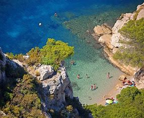
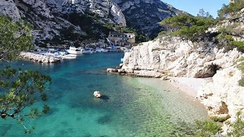

Les meilleurs randonnees de Marseille
Au départ de Luminy (accessible via la ligne de bus B1 ou 521),
Il vous faudra environ 30 minutes de marche pour accéder au belvédère et 45 minutes pour arriver à la calanque.
La durée d'une randonnée dans les Calanques de Marseille dépend du parcours choisi.
Pour une randonnée de 2,3 km depuis Luminy, il faut compter entre 30 et 40 minutes.
Pour la traversée des Calanques par le GR 98-51, il faut compter environ 4 heures.
Pour une randonnée de 5 heures, l'âge minimum requis est de 16 ans.
Calanques de Sugiton et Morgiou:
Pour parcourir cette randonnée il vous faudra un équipement adéquat.
il est déconseiller de venir avec des enfants.
La randonnée compte plus de 6 passages difficile, glissant et non sécurisé
Mont Puget :

Cette randonné a un itinéraire de 13,8 km.
A Bouches-du-Rhône, ce parcours est généralement considéré comme difficile.
Celle-ci est également déconseiller pour les enfants
Calanque de Marseilleveyre.

A la calanque, la randonné dure seulement 1h 30m.
Elle est fesable pour les enfants mais certains passages seront dur pour eux.
la difficulté sera normal.
la calanque se trouve au 8ème arrondissement de marseille, près du hameau de Callelongue.
Pointe du Belvédère.

La randonné du Belvédère dure en moyenne 2 heures
L'Arête S du Belvédère est une très vieille voie, facile, se déroulant sur les arêtes.
L'aller-retour est de 6,3 km.
Col et calanque de Sormiou.

La randonnée autour de la Tour du Poméguet a une distance de 2,6 km.
Elle permet de découvrir la plus grande île de l’archipel du Frioul.
La randonnée est considérée comme facile et peut être complétée en environ 1 heure.